Welcome to Chanita's Brides of Thailand
A COMPLETELY FREE MATCHMAKING SERVICE TO MARRIAGE-MINDED MEN

Chanita Thain, Founder

That's me!

January 12, 2013
Hello! I'm Chanita Thain, founder of Chanita's Brides. I'm from Kalasin, in the northeast of Thailand, and have been happily married for ten years to my English husband, Paul, from London. Together we have two beautiful children and it's become my passion to help marriage-minded men from all over the western hemisphere have a chance to achieve their own version of our picture-perfect story.
My team is keenly familiar with the obstacles and disappointments that are often encountered, and which some of you may have even previously experienced, as western men, with Asian dating websites – from cultural and language issues ... to women seeking only "financial support" ... to outright scammers – and we're here to put your concerns about each of these things to rest.
I personally interview and oversee the approval of every female member of our service. They're qualified based on their fully single and available status, their cultural understandings and communicative abilities, their physical and emotional condition and readiness for a relationship, and their sincerity about seeking a serious lifetime partner in a mutually healthy, happy, and passionate marriage.
Most importantly, despite the fact that our western male members are usually more financially capable than most Thai citizens, the fees for our service are incurred only by the female members – and never by the men. This not only renders our program completely free of charge to you, but it offers yet an additional level of assurance as to the seriousness of the women we work with.
Please feel free to contact us through this website if you'd like to be interviewed and considered for membership.